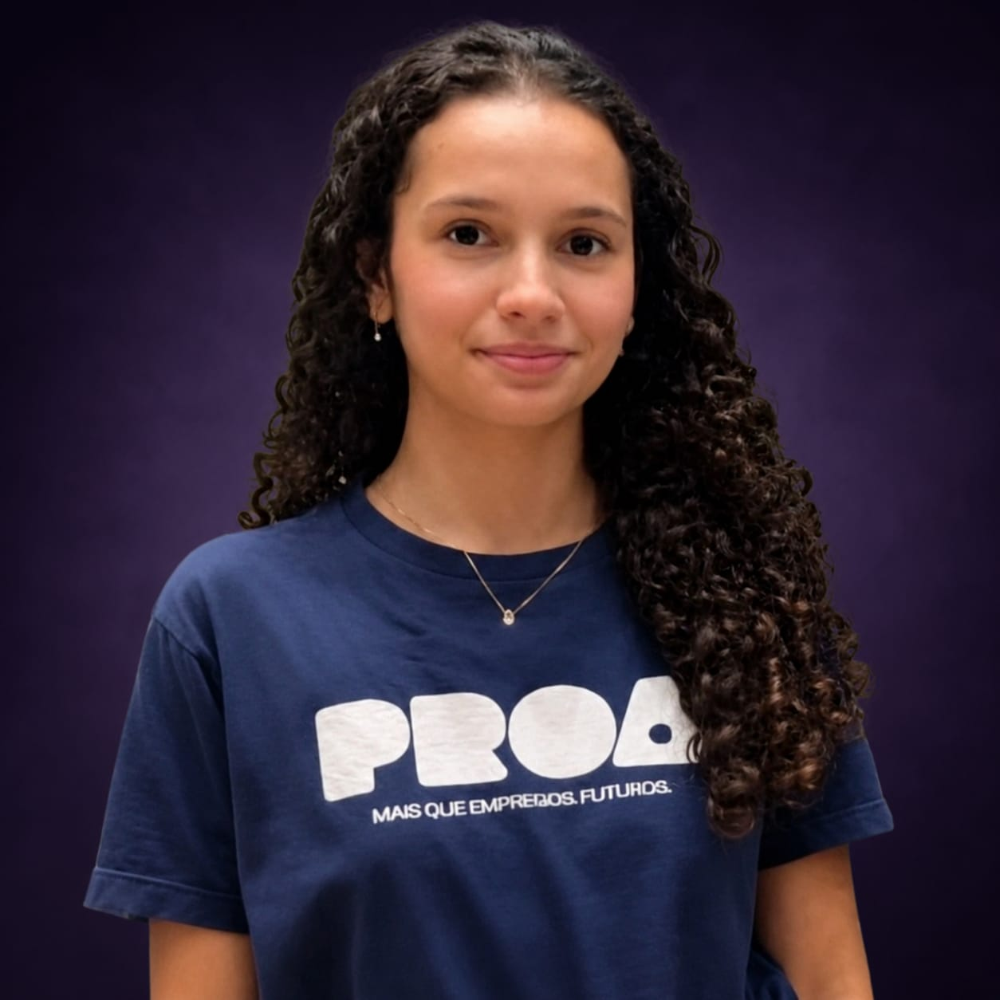

Beatriz Lacerda
Prazer em Conhecer
Faço parte do Instituto PROA e estou trilhando uma jornada de especialização técnica. Meu foco principal é expandir minhas habilidades para dominar tanto o desenvolvimento web quanto o back-end. Acredito que entender a estrutura e a lógica por trás de cada linha de código é fundamental para construir projetos eficientes. Além do código, possuo curiosidade pela área de banco de dados e análise de dados. Gosto de entender como a informação é estruturada e como podemos extrair valor dela para tomar decisões inteligentes. Estou em constante evolução e pronta para aprender e enfrentar novos desafios.
Baixar o meu CVMapa de Carreira
Estágio em programação
Meu foco é construir uma base sólida em programação, aprendendo as melhores práticas de escrita de código. Estou empenhado em iniciar minha trajetória profissional como Estagiário, unindo minha sede de aprendizado técnico com a proatividade para resolver problemas do dia a dia, sempre focado em contribuir com a equipa e dominar novas tecnologias.
Soft Skills exigidas para essa carreira:
- Comunicação Estratégica.
- Autonomia.
- Pensamento crítico.
- Resiliência na resolução de problemas.
Roadmap de Aprendizado:
- Lógica de Programação
- Git & GitHub
- Estrutura de Dados
Desenvolvedora Júnior
Meu foco é expandir minhas habilidades técnicas para dominar tanto o desenvolvimento web quanto as partes essenciais de back-end. Estou empenhada em crescer como Desenvolvedora Júnior, unindo minha vontade de aprender com a habilidade de trabalhar bem em equipe, além de aprimorar meu inglês.
Soft Skills exigidas para essa carreira:
- Curiosidade.
- Aprendizado contínuo.
- Pensamento crítico.
- Colaboração proativa.
Roadmap de Aprendizado:
- Lógica de Programação
- Python
- Java Web
Desenvolvedora Pleno
Como Desenvolvedora Pleno, meu objetivo é aplicar meus conhecimentos em desenvolvimento Web e Back-end para construir sistemas eficientes. Atuando com autonomia na resolução de problemas complexos e na entrega de código de qualidade, sempre prezando pela colaboração técnica com o time e pela comunicação fluida em ambientes multiculturais através do inglês avançado.
Soft Skills exigidas para essa carreira:
- Pensamento Crítico.
- Responsabilidade.
- Comunicação Assertiva.
- Colaboração.
Roadmap de Aprendizado:
- Lógica de Programação
- Python
- Java Web
- Inglês Avançado
Soft e Hard Skills
Afinidade com as seguintes tecnologias e técnicas:
Frontend
-
React
-
JavaScript
-
HTMLCSS
Backend
-
Python
-
Lógica de Programação
-
Banco de Dados
Outras
- Figma
- GitHub
- Canva
Soft Skills
- Comuniação
- Trabalho em equipe
- Vontade de aprender
- Proatividade
- Responsabilidade
- Organização
Idiomas
- Português (Nativo)
- Inglês (Intermediário)